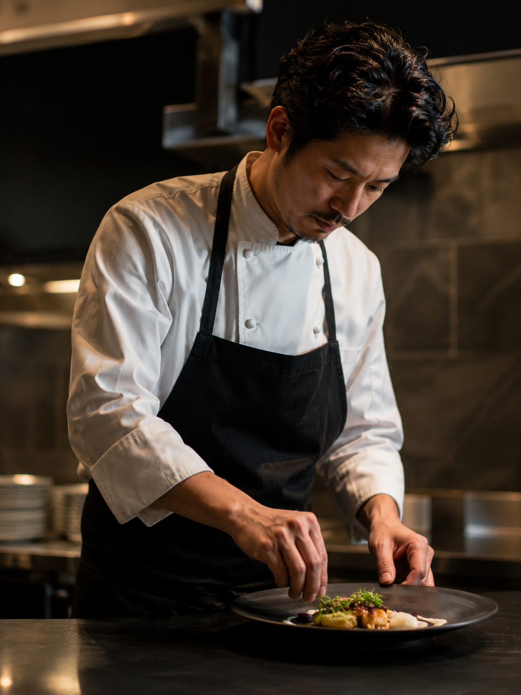

Chef — 中村 悠
Our Story
30年の問い
「料理とは何か」——その問いを抱えたまま、中村悠は世界中の厨房を旅した。パリ、コペンハーゲン、京都。各地で出会った食文化は、やがて一つの確信へと収束していった。
土地が、季節が、人が——食材に命を吹き込む。シェフの役割は、その声に耳を傾けることだ、と。
2018年、南青山にRACINEを開業。静けさの中に、すべての答えがあった。
中村 悠
Executive Chef